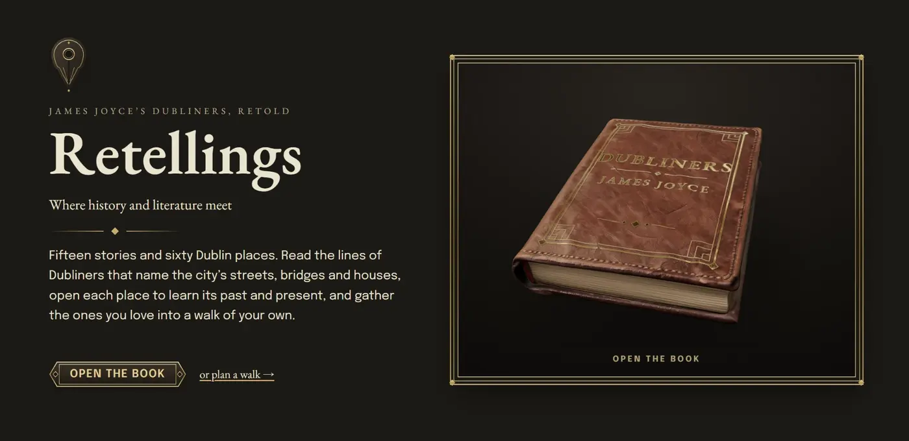
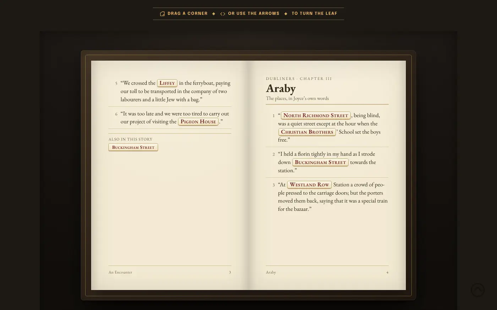
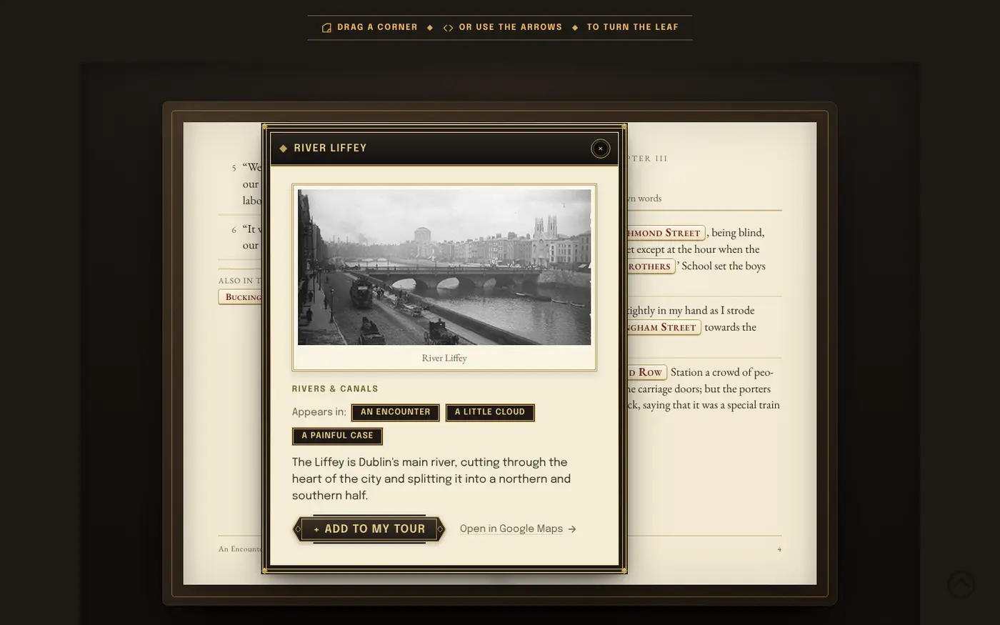
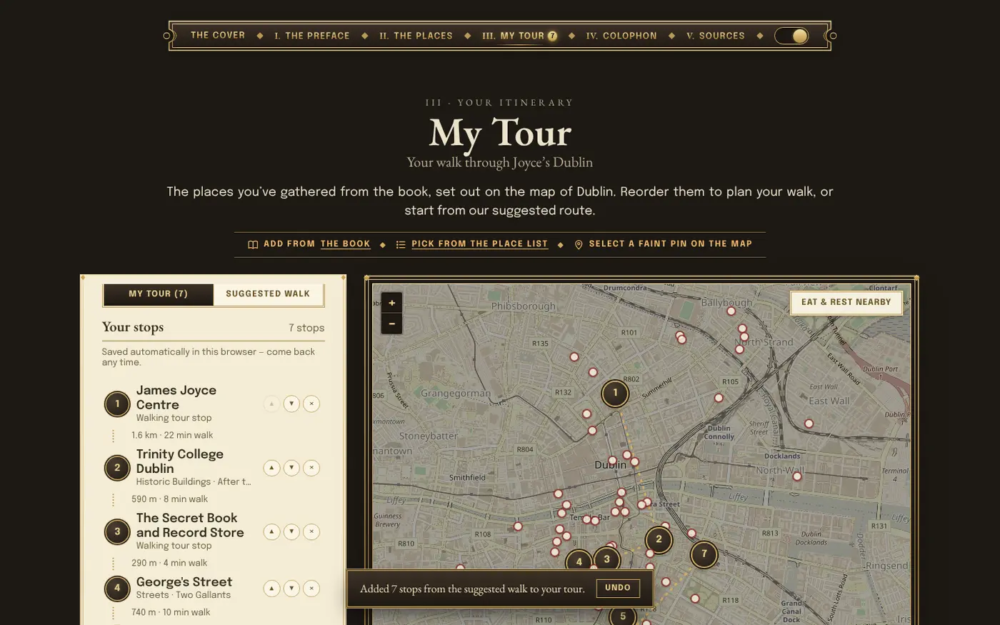
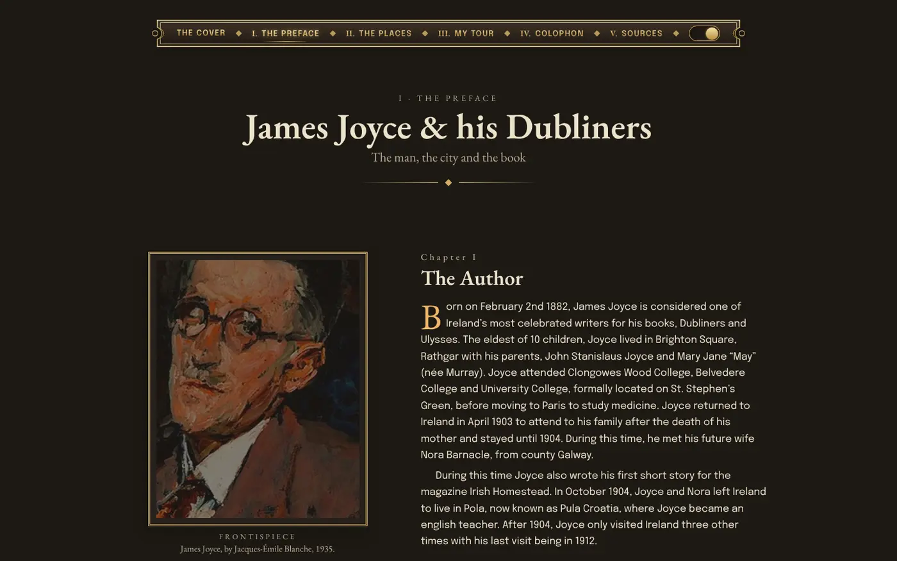

Case study · Website redesign
Retellings
Where history and literature meet. James Joyce’s Dubliners, redesigned as a book you can read, explore and walk: fifteen stories, sixty Dublin places, and a walk of your own.

Tech stack
- HTML5
- CSS3
- JavaScript
- three.js
- StPageFlip
- Leaflet
- Figma
- 15Stories, each with the lines that name Dublin
- 60Places you can open, save and walk
- 42Sources, searchable from every page
- 0axe-core issues, light and dark, desktop and phone
The problem
Our first version, built as a team for the MSc, put the stories, Joyce’s life, the locations and a walking tour on separate pages. It worked, but it read like a website about a book rather than the book itself: you read about a street in one place and found it on a map somewhere else, and the walk was a fixed list you couldn’t make your own.
The idea
Make the whole site read like a book. The navigation became its table of contents (The Cover, I. The Preface, II. The Places, III. My Tour, IV. Colophon, V. Sources), every page shares one Art Deco style of deep ink and gold, and the places live inside Joyce’s own sentences, so reading a line and visiting the street it names are the same gesture.
What I did
- A book you openA 3D copy of Dubliners on the cover, built in three.js, that opens into the stories. Going back to the cover resets it to its resting view.
- Places inside the textA page-turning book of the lines that name Dublin. Every place is a label that opens a draggable window with its history, a picture, an audio guide where there is one, a Google Maps link and Add to my tour.
- A walk of your ownSaved places land on a Leaflet map of Dublin. Reorder stops by dragging or with the arrows, see walking times between them, let Best order find the shortest route, and undo any change.
- Take it with youCafés, toilets, water and parks near your stops, a one-page printable map and itinerary, Google Maps directions, and KML or GPX files for offline map apps.



Accessible by design
Accessibility was my role on the original team, and I held this edition to WCAG 2.1 AA. axe-core finds no issues on any page, in light or dark mode, on desktop or phone, with windows and the phone menu open.
- Keyboard: a skip link, visible focus and real buttons for every control. Windows close with Esc and return focus to where you were.
- Screen readers: semantic landmarks, labelled controls, and alt text and captions crediting every image.
- Reading comfort: strong contrast, light and dark themes, no italic text, and reduced motion for anyone who asks for it.

Why it matters for my work
Retellings is where my two sides meet most directly: art direction and a strong visual world on one hand, and on the other a real tool people can use on the street, with no framework, no build step and nothing to install. Plain HTML, CSS and JavaScript, three.js for the books and Leaflet for the map.
Made for academic purposes as part of the MSc in Interactive Digital Media at Trinity College Dublin. Original site by Emma Sun, Ge You, Logan Dulski, Nashwa Hamido and Yayi Liu; this edition redesigned by Nashwa Hamido. Images and place descriptions are credited on the site.